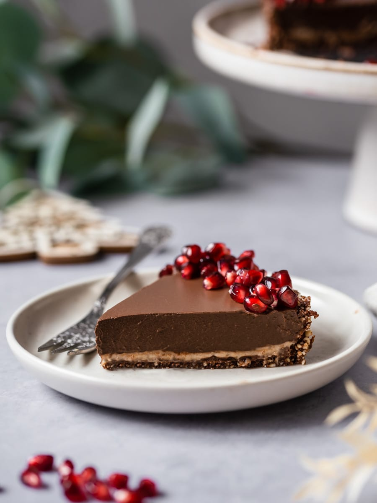

Tema I
Doces caseiros
Biscoitos caseiros
"John Sabores"
Ingredientes:
- 1 lata de leite condensado
- 3 colheres de manteiga
- 5 chávenas de farinha.
Como fazer:
- Começa por ligar o lume, pega em uma tigela normal e coloque os ingredientes todos. Mistura tudo muito bem até obter uma massa homogénea.
- Com o rolo de massa, estique muito bem a massa e dê o formato aos teus gosto.
- Em uma traveça já ontada, com farinha de trigo, leve os biscoitos ao forno durante 15 minutos.
- Depois de sair do forno, decora aos seus gostos e coma bem que vais amar.

Bola de Berlim
"John Sabores"
Ingredientes:
- 300ml de leite
- 3 colher de fermento biológico
- 2 ovos
- 100gm de açúcar
- 900gm de trigo
- 3 colher de manteiga
- 100gm de coco ralado
- 200gm chocolate derretido
Como fazer:
- começa por pegar em uma tigela normal e coloque o leite o fermento e misture, em seguida acrescente os ovos e o leite e misture muito bem durante 30 segundos.
- Agora adiciona a farinha de trigo aos poucos e misture muito bem e deixa a massa descansar durante 20 min.
- Depois da massa descansar sova a massa com a manteiga durante 5min , depois corta a massa em várias bolinhas e frite-as.
- Depois de fritas, corta ou meio e coloque o creme que quiseres , depois disso purvilha com coco e come bem que vaz Amar.

Donuts fofinhos
"John Sabores"
Ingredientes:
- 300ml de leite
- 3 colher de fermento biológico
- 2 ovos
- 100gm de açúcar
- 900gm de trigo
- Chocolate já derretido
- Pirpitas coloridas
- Pérulas doces
Como fazer:
- começa por pegar em uma tigela normal e coloque o leite o fermento e misture, em seguida acrescente os ovos e o leite e misture muito bem durante 30 segundos.
- Agora adiciona a farinha de trigo aos poucos e misture muito bem e deixa a massa descansar durante 20 min.
- Depois da massa descansar sova a massa com a manteiga durante 5min , depois corta a massa em várias bolinhas e apalpa e faz um futuro au meiu e deixa descansar e frite-as.
- Depois de fritas, passa ao chocolate e purvilha com pirpitas e aseguir deixe-a no figurifico e depois come bem que vaz Amar.

Pães doces caseiros
"John Sabores"
Ingredientes:
- 300ml de leite
- 3 colher de fermento biológico
- 2 ovos
- 100gm de açúcar
- 900gm de trigo
- 3 colher de manteiga
- 400gm de açúcar
- 300gm coco ralado
Como fazer:
- começa por ligar o forno e pegar em uma tigela normal e coloque o leite o fermento e misture, em seguida acrescente os ovos e o leite e misture muito bem durante 30 segundos.
- Agora adiciona a farinha de trigo aos poucos e e misture muito bem e deixa a massa descansar durante 20 min.
- Enquanto discanssa pegue uma tigela e faça o recheio de açúcar a manteiga e o coco.
- Depois da massa descansar, sova a massa com a manteiga durante 5min , depois estique a massa e coloque o recheio e enrole , depois corte e leve ao Forno em um tabuleiro já ontado durante 45min.
- Depois de sair come bem que vaz Amar.

Tarte de chocolate
"John Sabores"
Ingredientes:
- 200ml de leite
- 1 colher de fermento biológico
- 2 ovos
- 100gm de açúcar
- 5gm de trigo
- 3 colheres de manteiga
- 500gm chocolate derretido
Como fazer:
- começa por pegar em uma tigela normal e coloque o leite o fermento e misture, em seguida acrescente os ovos e o leite e misture muito bem durante 30 segundos.
- Agora adiciona a farinha de trigo aos poucos e e misture muito bem e deixa a massa descansar durante 20 min.
- Depois da massa descansar sova a massa com a manteiga durante 5min , depois estique a massa e coloque em uma forma de tarte e leva ao forno.
- Depois de sair coloque recheio de chocolate e leve ao Frize durante 10min depois de sair come bem que vaz Amar.
